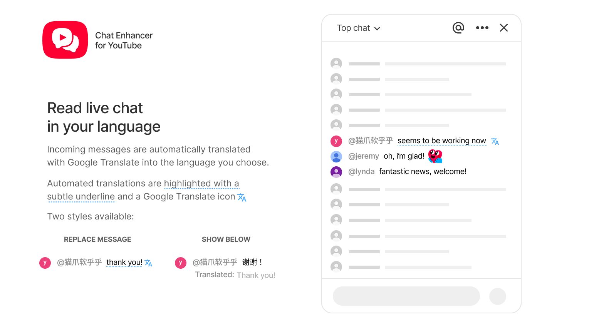
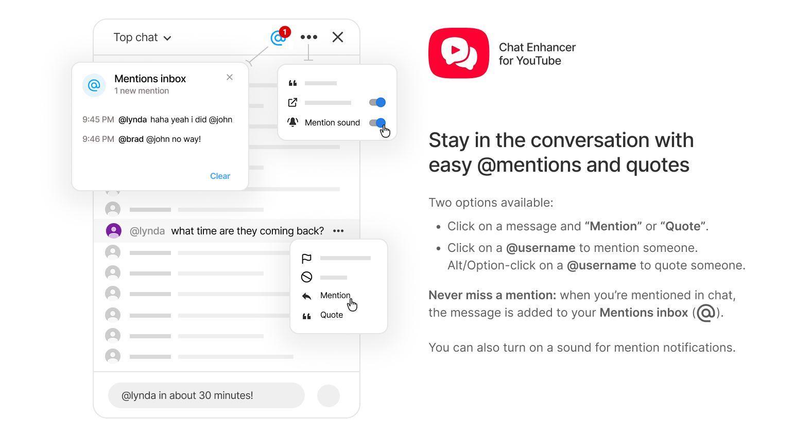
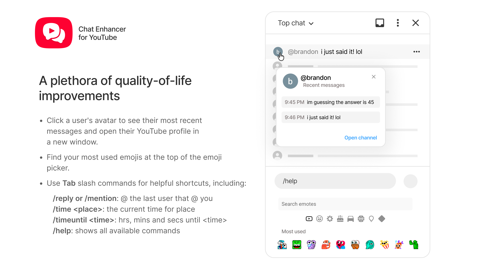

Translate Live Chat
Choose a target language from YouTube's live chat settings and decide whether translations replace messages or appear below.
Browser extension for YouTube live chat
Translate messages, mention and quote users, revisit chat context, catch mentions, reuse emojis, and run quick commands without replacing YouTube's native chat.
Built for live streams
Choose a target language from YouTube's live chat settings and decide whether translations replace messages or appear below.
Use YouTube's message menu, author clicks, profile cards, or slash commands to mention and quote people faster.
Open an avatar card to review a user's recent messages in the current chat and jump to their channel when needed.
Keep a local list of recent messages that mention your handle, with an optional subtle sound for new mentions.
Add a compact row of your most-used emojis to YouTube's emoji picker so common reactions are always close.
Press Tab to expand commands for mentions, quotes, repeated messages, time helpers, and extension settings.
Screenshots



Install
Install from your browser's extension store when available, or build the extension from source for local development.
Privacy
Settings are stored with browser extension storage. Mentions are stored locally. Recent profile messages stay in memory for the current chat page.
When translation is enabled, message text is sent to the translation endpoint so it can be translated.